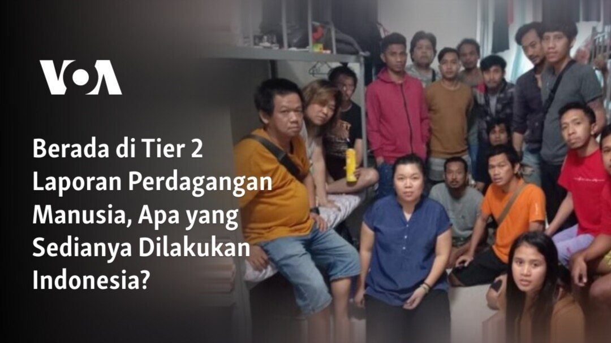
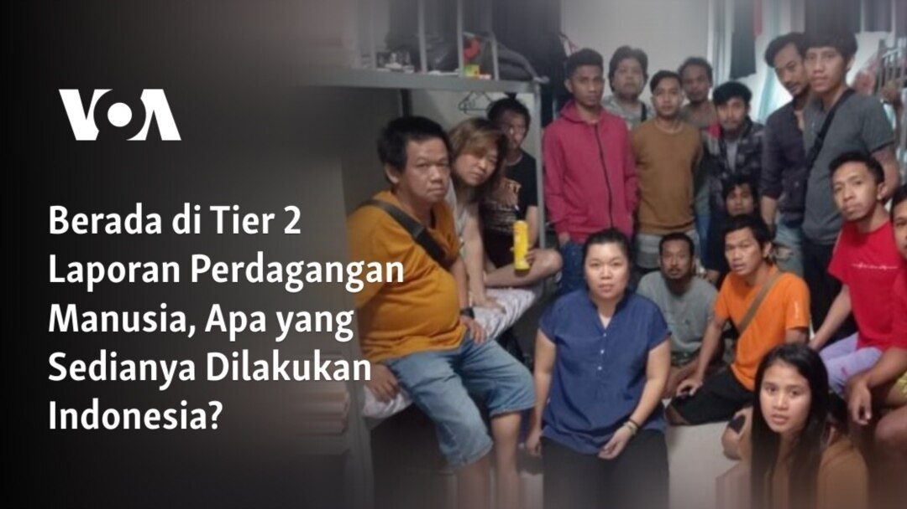

SDGs (Sustainable Development Goals) atau TPB (Tujuan Pembangunan Berkelanjutan) adalah rangkaian dari 17 tujuan yang dibuat oleh PBB atau United Nations. Tujuan–tujuan ini memiliki makna untuk menciptakan dunia yang lebih tentram dan damai, serta untuk mencapai masa depan yang lebih baik bagi semua orang, terutama generasi–generasi yang akan datang. 17 tujuan dalam SDGs berisi tentang pendidikan yang lebih maju, menjaga kebersihan lingkungan atau alam sekitar, meminimalisir dan menghapuskan kemiskinan yang ada, dan lain sebagainya. Salah satu dari SDGs yang mudah untuk dipahami adalah pekerjaan layak dan pertumbuhan ekonomi, yang merupakan tujuan ke–8 SDGs.
Tujuan ini merupakan upaya untuk terus meningkatkan tingkat pertumbuhan ekonomi, serta memberi kesempatan kepada masyarakat untuk memiliki pekerjaan yang penuh dan produktif. Namun, itu tidak hanya penjelasan yang diberikan untuk tujuan SDGs ini. Tujuan ini juga fokus kepada pemberian perhatian yang sama dan kualitas pekerjaan yang layak bagi semua orang, tanpa memandang jenis kelamin mereka. Tidak hanya itu, tetapi individu difabel atau yang mengalami disabilitas juga diberi kesempatan untuk mendapatkan pekerjaan yang baik. Secara singkat, tujuan ke–8 SDGs tidak hanya merujuk pada suatu golongan masyarakat tertentu, tetapi juga menghilangkan gagasan tentang perbudakan, perdagangan manusia, pekerja anak–anak, dan lebih menekan akan hal penciptaan lingkungan kerja yang aman, serta dapat dinikmati dan dialami oleh setiap orang.
Tentu saja, sama seperti tujuan lainnya, tujuan ke–8 SDGs memiliki target dan indikatornya sendiri agar dapat terpenuhi dalam waktu dekat. Menurut situs resmi Tujuan Pembangunan Berkelanjutan, ada sejumlah indikator terkait tujuan tersebut. Indikator yang mudah dipahami beserta penjelasannya untuk mendalami tujuan ke–8 SDGs adalah:

1. Salah satu indikator tujuan ke–8 adalah mencapai tingkat pembangunan ekonomi dan produktivitas yang lebih tinggi melalui berbagai macam hal, seperti melalui penggunaan teknologi dan aspek–aspek yang serupa lainnya. Hal ini untuk memastikan bahwa ekonomi negara tidak memburuk dari yang seharusnya meningkat, dan membawa kemakmuran bagi setiap negara tersebut. Indikator ini tentu dapat membantu banyak orang untuk menyadari fakta bahwa produktivitas ekonomi yang lebih tinggi perlu dicapai untuk menciptakan lingkungan kerja yang stabil bagi semua orang.
2. Indikator lain dari tujuan ke–8 adalah mencapai lapangan kerja yang produktif bagi laki–laki dan perempuan, serta kaum muda dan orang disabilitas pada tahun 2030. Hal ini tidak hanya memastikan bahwa setiap orang mendapatkan pekerjaan yang layak, dimana mereka memiliki kesempatan untuk berkembang, tetapi juga menegaskan fakta bahwa setiap orang harus dibayar dan mendapatkan jadi yang rata, disertakan dengan memiliki status atau nilai yang sama tanpa memperhatikan perbedaan jenis kelamin, usia, atau penampilan fisik.
3. Ini adalah salah satu indikator terpenting yang perlu diperhatikan dan sangat diperjuangkan dalam tujuan ke–8, yaitu mengambil tindakan segera terkait kerja paksa, perbudakan modern, perdagangan manusia, serta perekrutan tentara anak yang tidak perlu, terutama yang masih di bawah umur pada tahun 2025. Ini adalah salah satu masalah paling krusial yang dihadapi dunia saat ini. Melalui persoalan ini yang dimasukkan ke dalam 17 tujuan tersebut, dapat memastikan bahwa masyarakat harus bersedia melakukan apa saja untuk menghentikan tindakan–tindakan mengerikan ini terjadi karena masalah ini tidak hanya melanggar hukum dan dapat merusak ekonomi dunia, tetapi juga menciptakan rasa tidak aman dan nyaman bagi para korban.
4. Menindaklanjuti tujuan sebelumnya adalah mengakhiri semua bentuk kerja paksa dan menciptakan lingkungan kerja yang aman dan nyaman bagi semua orang tanpa kecuali. Semua pekerja, termasuk pekerja migran perempuan wajib memiliki pengalaman kerja dan pekerjaan yang aman serta menyenangkan untuk meningkatkan kesejahteraan mereka dan mematahkan stereotip mengenai bagaimana perempuan seharusnya menjadi ibu rumah tangga, sementara laki–laki merupakan sosok yang mencari uang.
5. Indikator menarik lainnya adalah memastikan bahwa pada tahun 2023, masyarakat harus mulai mempromosikan pariwisata berkelanjutan yang dapat memberikan keuntungan dalam memberikan pemahaman yang lebih baik tentang budaya dan produk lokal. Hal ini merupakan hal yang indah dan penting untuk diperhatikan, karena memperhatikan produk asli dan menghargai budaya penduduk suatu negara merupakan salah satu hal yang paling penting ketika mengunjungi suatu tempat. Hal ini tidak hanya meningkatkan pertumbuhan ekonomi di negara tersebut, tetapi juga menjamin lingkungan kerja yang sesuai.

Namun, hanya karena tujuan tersebut memiliki target dan indikator yang ingin dicapai, bukan berarti tidak akan sering terjadi masalah. Saat ini, masih ada masalah yang sangat memprihatinkan yang menarik perhatian banyak orang. Masalah ini telah dialami selama bertahun–tahun dan masih dianggap sebagai salah satu tindakan manusia yang paling jahat dan memalukan. Masalah ini harus dihentikan kapan saja karena dapat menyebabkan kehancuran ekonomi yang luar biasa serta berdampak negatif terhadap kondisi mental manusia. Masalah ini terkait dengan indikator ke–3, yaitu mengenai perdagangan manusia.
 

Perdagangan manusia adalah tindakan mengerikan mengangkut atau memaksa orang dengan paksa hanya untuk menerima keuntungan atas layanan korban. Jenis tindakan ini dapat terjadi dalam bentuk apa saja, tetapi paling sering adalah tujuan eksploitasi seksual, perbudakan rumah tangga, pengemis anak, pengambilan organ korban, dan sebagainya. Indikator tersebut memiliki tujuan untuk mengakhiri segala bentuk perbudakan modern, perdagangan manusia, dan bentuk–bentuk lainnya pada tahun 2025. Akan tetapi, karena masalah ini masih menjadi salah satu global isu relevan terbesar di dunia dan kasus–kasus baru dapat ditemukan di seluruh bagian internet, tidak mungkin bahwa target tersebut dapat terpenuhi.
Menurut sebuah artikel yang ditulis oleh Laylan Pennel, terdapat lebih dari 40 juta korban perdagangan manusia di seluruh dunia. Laki–laki, perempuan, serta anak–anak yang menjadi korban ini terperangkap dalam bentuk–bentuk perbudakan modern, dan seperti yang telah disebutkan sebelumnya, bisa terjadi dalam bentuk eksploitasi seksual. Perdagangan manusia merupakan salah satu masalah yang paling memprihatinkan dan menyita perhatian di dunia karena terjadi sangat sering dan juga dapat mengakibatkan kondisi kesehatan yang buruk bagi para korbannya, baik secara fisik maupun mental. Perekonomian dan lapangan kerja yang seharusnya berkembang juga akan rusak karena tindakan ini, terutama karena para predator menerima sejumlah besar uang yang tidak semestinya hanya dengan mengeksploitasi orang lain. Banyak organisasi dan pemerintah telah berusaha untuk mencegah penyebaran perdagangan manusia dari meningkat lebih jauh. Namun, karena jumlah korban yang tidak berkurang seiring berjalannya waktu, hal ini akan tetap menjadi masalah besar bagi tahun–tahun berikutnya.
Pada tahun 2024, INTERPOL membentuk operasi besar dengan nama Operasi Liberterra II untuk menyelamatkan calon korban perdagangan manusia. Pihak berwenang dari seluruh dunia melakukan penggerebekan polisi dan memperkuat titik–titik perbatasan strategis. Menurut sumber tersebut, mereka memantau lebih dari 20.000 penerbangan dan banyak antara mereka yang memeriksa untuk melihat apakah ada bentuk perdagangan manusia yang sedang terjadi. Pada akhir operasi, mereka berhasil menyelamatkan sekitar 3.222 calon korban, serta 17.793 imigran ilegal. Kemudian, sebesar 2.517 penangkapan dilakukan setelah mereka melakukan operasi besar ini. Jenis tindakan ini benar–benar menyelamatkan banyak nyawa. Meskipun demikian, masih ada banyak di luar sana yang saat ini masih menjadi korban perdagangan manusia. Polisi dan berbagai macam organisasi yang sangat fokus pada masalah ini masih perlu mengambil langkah lebih lanjut agar masalah global yang relevan ini dapat cepat diselesaikan.